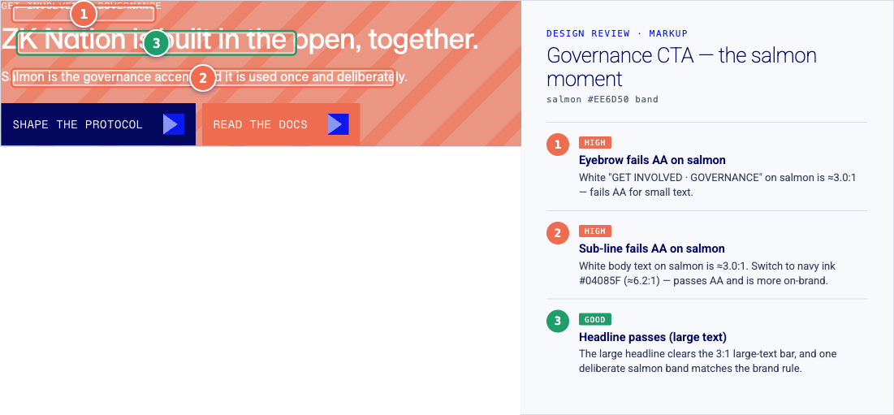
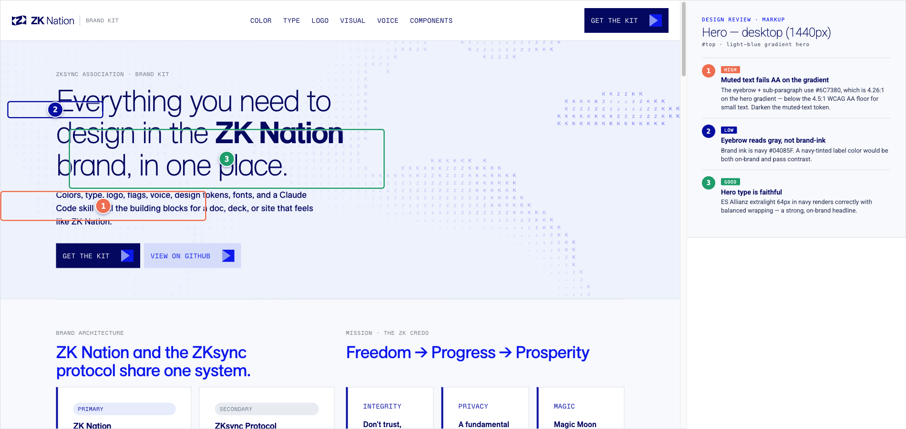
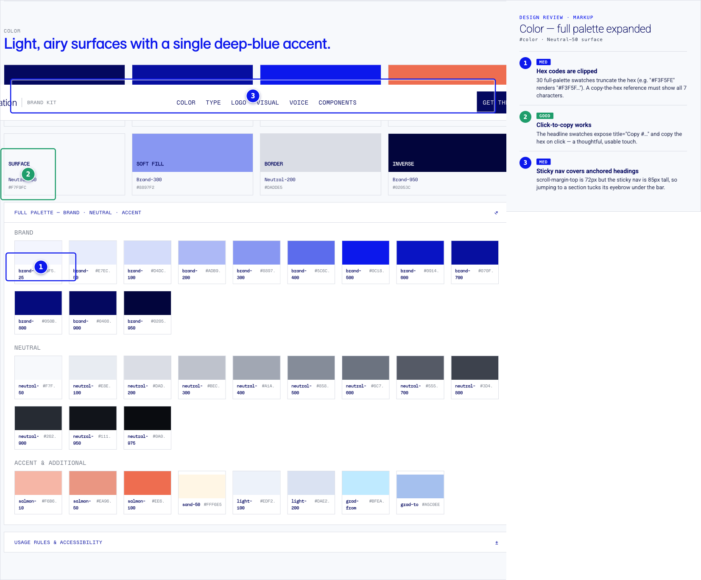
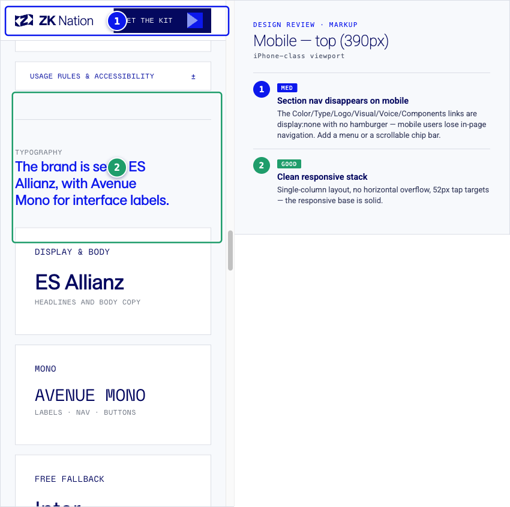
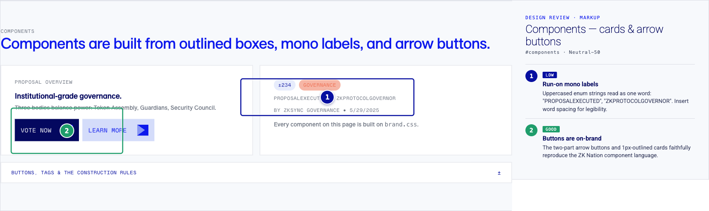

WHAT IS ALREADY STRONG
The foundation is solid — these were verified and should not regress.
alt and loading="lazy".h1, ordered h2→h3, meta description, lang, viewport-fit=cover.prefers-reduced-motion is handled.<details> disclosures, keyboard-operable.FINDINGS · 9 TOTAL
Concentrated, measured, and fixable.
Small white text on the salmon CTA band fails WCAG AA
The governance band paints white text on salmon #EE6D50. Measured small-text contrast is ≈3.0:1 — below the 4.5:1 AA floor. Affected: the GET INVOLVED · GOVERNANCE eyebrow, the sub-line, and the READ THE DOCS label. The large headline clears the 3:1 large-text bar and is fine.
Fix
Set the band's small text to navy ink #04085F
(measured ≈6.2:1 on salmon — passes AA, and more on-brand).

The muted-text token is below AA on the hero gradient
Muted text uses #6C7380. On the hero gradient it measures 4.26:1 — fails AA; on Neutral-50 it is 4.52:1 — passing but with almost no margin. Affects hero eyebrow + sub-paragraph, section eyebrows, card meta, footer (12–14px).
Fix
Darken the token to reach ≥4.5:1 on every surface including the gradient
(e.g. ~#565E72). Fix it in the token source brand.css so the site and
every skill consumer inherit it.

Full-palette hex codes are clipped
30 swatches truncate their hex (#F3F5FE → #F3F5F…): the visible box is 38–40px while the text needs 42px. A reference whose job is to hand you an exact hex must never clip a character.
Fix
Give the hex column enough width for a 7-char #RRGGBB, drop
text-overflow:ellipsis there, keep white-space:nowrap; add click-to-copy like the headline swatches.

Mobile loses in-page navigation entirely
At 390px the section nav is display:none with no hamburger or replacement — only the logo and "Get the kit" remain. On a single-page reference this long, mobile users can only scroll.
Fix
Add a compact mobile menu (disclosure/sheet) or a horizontally-scrollable Avenue-Mono
chip bar of the six section anchors pinned under the nav.

The hero ASCII art is a massively oversized PNG
group-3.png is 184 KB · 1939×1336 but renders at
~184px wide — the single largest asset, roughly half the page weight, for a small mark.
Fix
Right-size and re-encode to AVIF/WebP (or SVG, since it's line art); target under 20 KB.
Add width/height to reserve layout.
Anchor jumps hide section headings under the sticky nav
Sections set scroll-margin-top:72px but the sticky nav is 85px tall, so jumping to a section tucks its eyebrow ~13px under the bar.
Fix
Set scroll-margin-top to ~96px on the anchored sections.
No :focus-visible styling anywhere
No rule defines a custom focus indicator across a large interactive surface (nav links, 8 copy-buttons, 7 disclosures, CTAs). Custom-styled buttons can render the default ring invisibly on brand fills.
Fix
Add one rule: :focus-visible{outline:2px solid var(--brand-500);outline-offset:2px}.
Run-on mono labels in the component card
Uppercased enum strings concatenate: PROPOSALEXECUTED, ZKPROTOCOLGOVERNOR. Authentic, but illegible as a label.
Fix
Insert word breaks (PROPOSAL EXECUTED); fix it in the component template too.

Swatch screen-reader feedback & theme-color
Copy-swatches expose title (mouse-only) but no aria-label and no
aria-live "Copied" confirmation. Separately, no theme-color meta tints mobile browser chrome.
Fix
Add aria-label + a visually-hidden aria-live="polite" region to the swatches;
add <meta name="theme-color" content="#04085F">.
TOOLKIT & SKILL
The skill package is well-architected — fix accessibility at the token source so it propagates.
A tightly-scoped SKILL.md, 11 concise references (~753 lines), three starter templates, machine-readable
agent endpoints (apply-zk-nation-brand.md, llms.txt, brand.json), an asset URL map,
and tokens as the single source of truth mirrored to the site via sync.sh. Font licensing is handled responsibly.
The biggest wins chain directly off the website fixes:
brand.css + color.md, then run sync.sh — site and every consumer become AA-clean at once.THE FIX PASS
Priority order — one focused session.
- A11Y-1 Salmon contrast → navy text (token + site)
- A11Y-2 Darken muted-text token to AA-on-gradient (token + site)
- FUNC-1 Un-clip the palette hex codes
- RESP-1 Mobile section navigation
- A11Y-3 Add a
:focus-visiblering - FUNC-2
scroll-margin-top: 96px - PERF-1 Right-size hero ASCII PNG → AVIF/SVG
- POL-1 · A11Y-4 · META-1 Label spacing, swatch a11y, theme-color
- TOOL-1…4 Propagate into tokens,
color.md, templates, hosted assets